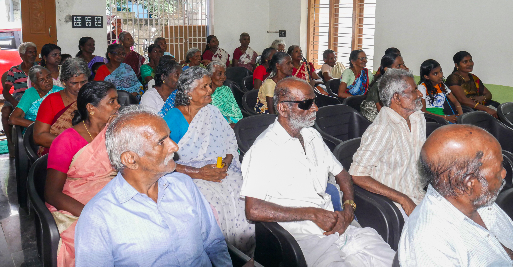
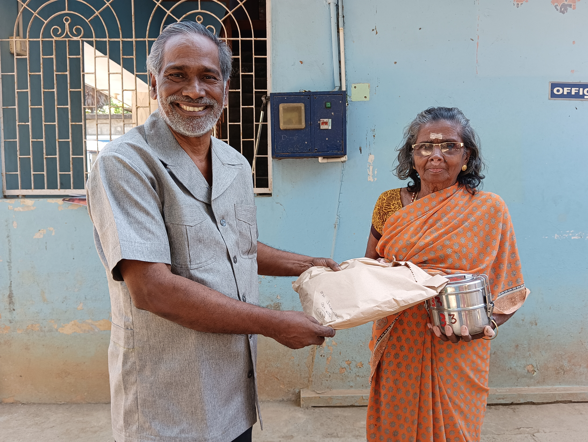
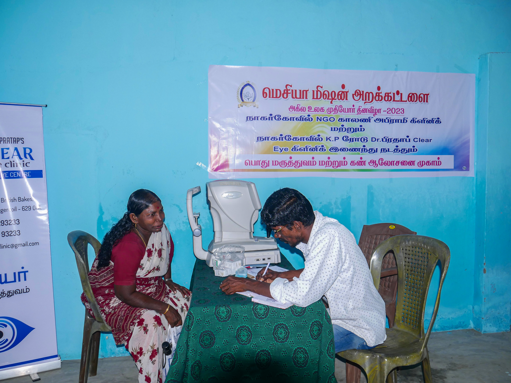
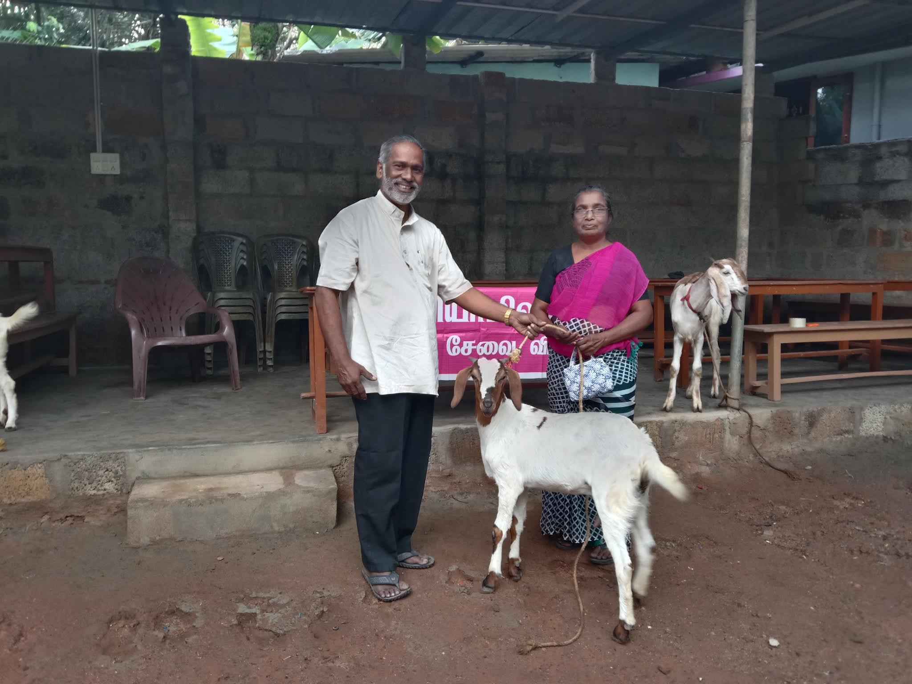

Restoring Dignity, Comfort & Care to Senior Citizens in Need
Messiyah Mission Trust, through the Messiyah Mission Elders Home, is committed to safeguarding vulnerable elderly persons, providing nutritional daily meals, free healthcare camps, and lifelong dignity.
Founded to Serve the Destitute and Forgotten
Messiyah Mission Trust is a legally constituted public charitable trust established on January 24, 2006 (Registration No: 68/2006) based in Thanivilai, Kanyakumari District, Tamil Nadu.
Under the compassionate guidance of Founder Rev. T. Mariaraj, the trust has focused its core energies on the welfare of destitute senior citizens who lack family care, basic sustenance, or medical attention in rural communities.
Read Full Trust History & Governance →
Elders gathering and community welfare celebration organized by Messiyah Mission Trust.
Messiyah Mission Elders Home
A dedicated sanctuary providing safe shelter, regular nutritious nourishment, essential medical attention, and loving respect for elderly persons who have no family guardian.
Nutritious Food Care
Ensuring hot, balanced, and hygienic meals every day for aged individuals who are unable to cook or support themselves independently.
Regular Health Monitoring
Facilitating routine medical checkups, free eye screenings, medication access, and health guidance in coordination with local clinics.
Dignified Living & Respect
Creating a secure, serene, and loving environment where senior citizens are treated with the highest honor, companionship, and emotional peace.
Humanitarian Initiatives & Relief Programs
Ground-level charitable interventions verified through on-site field work across Kanyakumari District.

Food & Nutrition Distribution
Direct doorstep distribution of cooked nutritional meals, ration provisions, and dry supplies to destitute elderly individuals.
Read details →
Free Eye Care & Health Camps
Specialized vision testing camps, cataract screenings, and basic health checkups organized for rural senior citizens without access to hospitals.
Read details →
Livelihood & Relief Support
Providing livestock support, winter blankets, clothing distributions, and hardship relief grants to impoverished rural families and senior citizens.
Read details →Leadership Dedicated to Service
Transparent administration guided by a lifelong mission to protect senior citizens and the underprivileged.
Rev. T. Mariaraj
Rev. T. Mariaraj founded Messiyah Mission Trust in January 2006 with the heartfelt purpose of reaching out to abandoned elders, the impoverished, and the bedridden in rural Tamil Nadu.
Under his visionary stewardship, the trust has faithfully operated the Messiyah Mission Elders Home, coordinated vital eye screening clinics, and organized comprehensive community relief efforts, maintaining rigorous compliance with statutory legal registrations.
Official Document Information
Messiyah Mission Trust operates in complete compliance with Indian statutory authorities and official documentation orders.
Official Document Information
| Authority / Credential | Registration / Certificate Number | Status & Verification |
|---|---|---|
| Trust Registration | Reg. No. 68/2006 (Dated 24.01.2006) | Registered in Kanyakumari Dist. |
| Section 12A Registration | UR.NO.AAETM4464E/05/16-17/T-1311 | Income Tax Exemption Granted |
| Section 80G Registration | ITBA/EXM/S/80G/2019-20/1025034868 (1) | 50% Tax Exemption for Donors |
| CSR Registration | CSR00059066 | Ministry of Corporate Affairs Approved |
| NITI Aayog Darpan ID | TN/2019/0238980 | Government of India NGO Portal |
| Permanent Account Number (PAN) | AAETM4464E | Active Tax Identity |
Support Messiyah Mission Trust & Elders Home
Your contributions directly fund wholesome daily meals, geriatric medicines, and secure shelter for destitute elderly persons.
Connect with Our Office
Visit our registered trust headquarters, discuss elders admission, or inquire regarding relief activities.
Visiting & Consultation Information
All admissions and on-site visits to Messiyah Mission Elders Home are scheduled by appointment to maintain the health and rest of the elderly residents. Please call +91 9488912650 prior to visiting.